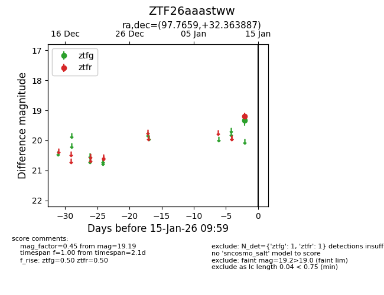
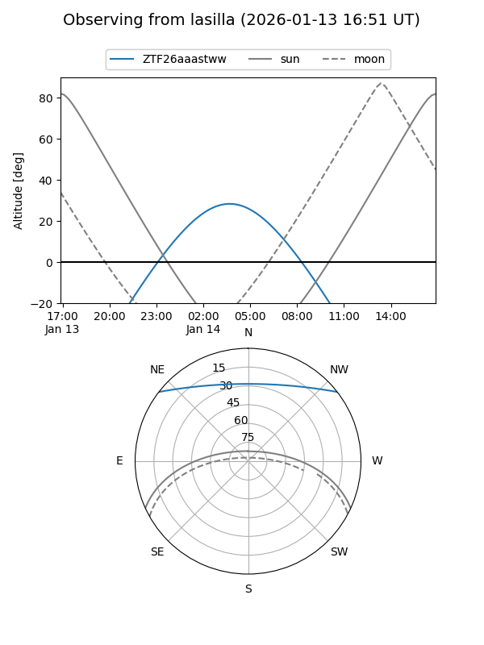
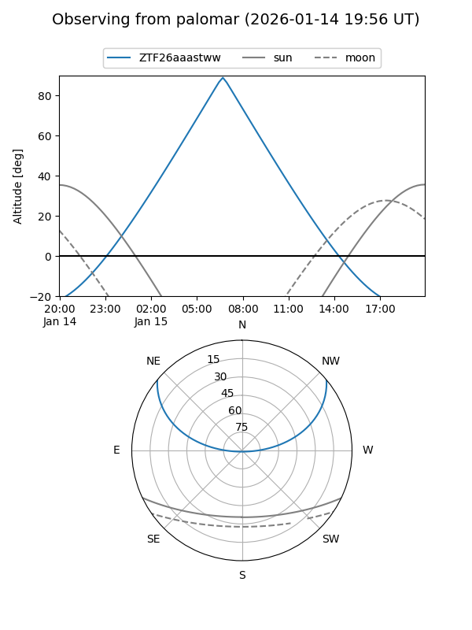

ZTF26aaastww
Target ZTF26aaastww at 2026-01-13 09:55
Aliases and brokers:
FINK: link
Lasair: link
ALeRCE: link
alt names
ZTF26aaastww (ztf,fink_ztf)
Coordinates:
equatorial (ra, dec) = 97.7659,+32.36389
equatorial (HMS+DMS) = 06:31:03.83,+32:21:49.99
galactic (l, b) = (181.6785,+10.21512)
Flags:
Photometry:
last ztfr=19.19
1 ztfr detections
Lightcurve

Visibility


Additional plots